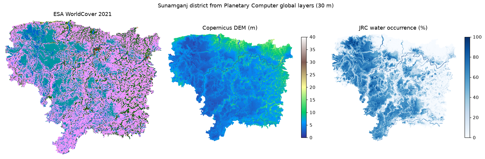

Cloud Platforms: Planetary Computer, Earth Engine and Copernicus openEO
Petabytes of Earth observation data now sit in public clouds next to computers you can rent. Several platforms package that data, and they differ in where your code runs:
Catalogue plus your own compute. Microsoft Planetary Computer, Earth Search on AWS and the Copernicus Data Space Ecosystem publish STAC catalogues of cloud-optimised files. You read them with open tools (pystac-client, odc-stac, rasterio, geolattice) from your laptop or, better, from a machine in the same region.
Server-side processing. Google Earth Engine and openEO (on Copernicus Data Space and other back ends) accept a description of the computation and run it on their infrastructure; only results come back.
This notebook works through each kind on Bangladesh. It compares three STAC catalogues on the same query, finds that they deliver different numbers for the same Sentinel-2 pixels, builds a cloud-free NDVI composite with odc-stac, summarises land cover, elevation and surface water for a haor district from Planetary Computer, and expresses the same composite as an openEO process graph and as Earth Engine code.
Learning objectives
Distinguish catalogue-based from server-side cloud platforms, and what each costs in access, egress and lock-in.
Search several STAC catalogues for the same data and compare what they return.
Detect and correct differences in how providers store Sentinel-2 reflectance (the BOA offset).
Load STAC items lazily into xarray with odc-stac, mask clouds and build composites.
Use analysis-ready global datasets (ESA WorldCover, Copernicus DEM, JRC Global Surface Water).
Express the same analysis for openEO and Earth Engine, and judge when to use them.
Data
Data
Platform
Sentinel-2 L2A, January-March 2024, over Bogra town and surrounding rice land
Planetary Computer, Earth Search (AWS), Copernicus Data Space
ESA WorldCover 2021 (10 m), Copernicus DEM GLO-30, JRC Global Surface Water
Everything in this notebook runs without an account except the execution of the openEO and Earth Engine computations, which need free registrations (Sections 7 and 8 explain how to enable them). Install: pip install pystac-client planetary-computer odc-stac openeo earthengine-api.
Contents
Setup
The platform landscape
Three catalogues, one question
Same scene, different numbers: the Sentinel-2 offset
Compute next to the catalogue: a cloud-free composite with odc-stac
Beyond imagery: ready-made global layers for a haor district
Server-side processing with openEO
Google Earth Engine
Choosing a platform
Summary and exercises
Setup
Installation. This notebook needs installation option 6 (every GeoLattice module): pip install "geolattice[all]". See “Installation options” in the GeoLattice README. It also uses geolattice[rsense-biopar], which no GeoLattice option installs: pip install "geolattice[rsense-biopar]".
Code
# Imports, plot defaults, and output folder for this notebook%matplotlib inlineimport jsonimport osimport shutilimport timeimport warningsfrom pathlib import Pathwarnings.filterwarnings("ignore")# Geospatial and cloud-STAC stack used belowimport numpy as npimport pandas as pdimport geopandas as gpdimport matplotlib.pyplot as pltimport rasteriofrom rasterio.warp import transform_boundsfrom rasterio.windows import from_boundsimport pystac_clientimport planetary_computerimport odc.stacimport rioxarray # noqa: F401 (adds .rio to xarray)import openeoimport eeimport geolatticeimport geolattice.web as webplt.rcParams.update({"figure.dpi": 110})DATA = Path("../../../Data")WEB = DATA /"00_shared"/"data_web_cloud_gis"OUT = WEB /"08_09_outputs"# Fresh output directory each run; districts come from Notebook 08_03if OUT.exists(): shutil.rmtree(OUT)OUT.mkdir(parents=True)ifnot (WEB /"08_03_outputs"/"districts.gpkg").exists():raiseFileNotFoundError("districts.gpkg is missing: run Notebook 08_03 first")AOI = [89.30, 24.80, 89.42, 24.90] # 12 x 11 km: Bogra town and the rice land around itSEASON ="2024-01-01/2024-03-31"# dry (Boro rice) seasonprint("geolattice", geolattice.__version__, "| odc-stac", odc.stac.__version__, "| openeo", openeo.__version__, "| earthengine-api", ee.__version__)
Sentinel-1/2, Landsat, Copernicus DEM, NAIP as COGs; STAC API
Anywhere; fastest in AWS us-west-2
Anonymous
Free data; your compute
Copernicus Data Space Ecosystem (CDSE)
The complete Copernicus archive; STAC API; S3
Anywhere; or its JupyterHub, openEO, Sentinel Hub
Free account for downloads and processing
Free quotas, paid beyond
Google Earth Engine
Multi-petabyte catalogue, ingested into Google’s own format
Google’s servers (server-side API)
Google Cloud project, registered for Earth Engine
Free for non-commercial and research use; commercial licences
openEO (CDSE, VITO, EODC, …)
The back end’s collections
The back end’s servers, through a standard API
Account with the back end
Credits; free tier on CDSE
AWS / Azure / GCP compute
Any of the above
Virtual machines, Kubernetes, batch, serverless
Cloud account
Pay for compute; read data in the same region
The trade-off: catalogue platforms give you the files and complete freedom over the analysis, with open tools that move between providers; server-side platforms remove data handling and scale automatically, but the analysis is written in their API and runs only there.
Three catalogues, one question
The same search on three STAC APIs: Sentinel-2 L2A scenes over the Bogra area, January to March 2024, under 5 % cloud.
Code
# Search three STAC catalogues for the same Sentinel-2 season and AOIcatalogues = {"Planetary Computer": ("https://planetarycomputer.microsoft.com/api/stac/v1", planetary_computer.sign_inplace, "B04"),"Earth Search (AWS)": ("https://earth-search.aws.element84.com/v1", None, "red"),"Copernicus Data Space": ("https://stac.dataspace.copernicus.eu/v1", None, "B04_10m"),}found, rows = {}, []for name, (url, modifier, red) in catalogues.items(): t0 = time.perf_counter()try:# Open the catalogue and keep scenes with cloud cover under 5 % client = pystac_client.Client.open(url, modifier=modifier) items =sorted(client.search(collections=["sentinel-2-l2a"], bbox=AOI, datetime=SEASON, query={"eo:cloud_cover": {"lt": 5}}).items(), key=lambda i: i.datetime)exceptExceptionas exc:print(name, "failed:", type(exc).__name__, exc);continue seconds = time.perf_counter() - t0 found[name] = items# Summarize hit count, timing, dates, and where the red band is hosted href = items[0].assets[red].href rows.append({"catalogue": name, "scenes": len(items), "search s": round(seconds, 1),"dates": ", ".join(sorted({i.datetime.strftime("%m-%d") for i in items})),"red band served as": href.split("://")[0] +"://"+ href.split("/")[2][:38] +"...","first scene id": items[0].id})pd.DataFrame(rows).set_index("catalogue")
scenes
search s
dates
red band served as
first scene id
catalogue
Planetary Computer
7
1.6
01-04, 02-03, 02-18, 02-23, 02-28, 03-09
https://sentinel2l2a01.blob.core.windows.net...
S2B_MSIL2A_20240104T044209_R033_T45RYH_2024010...
Earth Search (AWS)
6
0.8
01-04, 02-03, 02-18, 02-23, 02-28, 03-09
https://sentinel-cogs.s3.us-west-2.amazonaws.c...
S2B_45RYH_20240104_0_L2A
Copernicus Data Space
6
2.3
01-04, 02-03, 02-18, 02-23, 02-28, 03-09
s3://eodata...
S2B_MSIL2A_20240104T044209_N0510_R033_T45RYH_2...
All three catalogues answered in 0.8-2.3 s and found the same six acquisition dates, but they are not the same thing:
Planetary Computer returned 7 items for 6 dates: one date is listed twice, as two processing runs of the same acquisition. Its files are on Azure Blob Storage, reached through signed URLs.
Earth Search returned 6 items with short identifiers, and public HTTPS URLs on S3.
Copernicus Data Space returned 6 items whose files are s3://eodata paths, which need CDSE credentials to read.
A pipeline that mixes catalogues has to deduplicate by acquisition, not by item ID.
Same scene, different numbers: the Sentinel-2 offset
Since processing baseline 04.00 (January 2022), ESA stores Sentinel-2 L2A reflectance with an offset: reflectance = (DN − 1000) / 10000, so that dark pixels are not clipped at zero. Providers handle this differently. We read the same 12 × 11 km window of the red and near-infrared bands of the same scene (9 March 2024) from Planetary Computer and Earth Search.
Code
# Pick the latest date present in both Planetary Computer and Earth Searchpc_items = {i.datetime.date(): i for i in found["Planetary Computer"]}es_items = {i.datetime.date(): i for i in found["Earth Search (AWS)"]}day =sorted(set(pc_items) &set(es_items))[-1]pc_item, es_item = pc_items[day], es_items[day]# Window-read one band over the AOI without downloading the full COGdef window(href):with rasterio.Env(GDAL_DISABLE_READDIR_ON_OPEN="EMPTY_DIR", AWS_NO_SIGN_REQUEST="YES"):with rasterio.open(href) as src:return src.read(1, window=from_bounds(*transform_bounds(4326, src.crs, *AOI), src.transform)).astype("float64")bands = {"PC red": window(pc_item.assets["B04"].href), "PC nir": window(pc_item.assets["B08"].href),"ES red": window(es_item.assets["red"].href), "ES nir": window(es_item.assets["nir"].href)}# Compare digital numbers where both catalogues have valid pixelsvalid = np.all([b >0for b in bands.values()], axis=0)diff = bands["PC red"][valid] - bands["ES red"][valid]print(f"scene {day}: PC {pc_item.id} | ES {es_item.id}")print(f"processing baseline: PC {pc_item.properties.get('s2:processing_baseline')}, ES {es_item.properties.get('s2:processing_baseline')}; "f"ES 'earthsearch:boa_offset_applied' = {es_item.properties.get('earthsearch:boa_offset_applied')}")print(f"PC red minus ES red: median {np.median(diff):.0f}, range {diff.min():.0f} to {diff.max():.0f} (DN), {valid.sum():,} pixels")print("ES metadata for the red band:", es_item.assets["red"].extra_fields.get("raster:bands"))
scene 2024-03-09: PC S2A_MSIL2A_20240309T043701_R033_T45RYH_20240309T091651 | ES S2A_45RYH_20240309_0_L2A
processing baseline: PC 05.10, ES 05.10; ES 'earthsearch:boa_offset_applied' = True
PC red minus ES red: median 1000, range 800 to 1288 (DN), 1,390,928 pixels
ES metadata for the red band: [{'nodata': 0, 'data_type': 'uint16', 'bits_per_sample': 15, 'spatial_resolution': 10, 'scale': 0.0001, 'offset': -0.1}]
Code
# NDVI from the same pixels under correct and incorrect reflectance recipesdef ndvi(red, nir):return (nir - red) / (nir + red)recipes = {"PC, DN used as is (wrong)": ndvi(bands["PC red"], bands["PC nir"]),"PC, (DN - 1000) / 10000 (correct)": ndvi(bands["PC red"] -1000, bands["PC nir"] -1000),"ES, DN / 10000 (correct: offset already applied)": ndvi(bands["ES red"], bands["ES nir"]),"ES, metadata scale and offset applied (wrong: offset twice)": ndvi(bands["ES red"] *1e-4-0.1, bands["ES nir"] *1e-4-0.1),}# Score each recipe against the correct Earth Search scalingreference = recipes["ES, DN / 10000 (correct: offset already applied)"][valid]rows = []for name, v in recipes.items(): v = v[valid] ok = np.isfinite(v) & (np.abs(v) <=1) rows.append({"recipe": name, "median NDVI": np.median(v[ok]), "median abs. difference from correct": np.median(np.abs(v - reference)),"impossible values (|NDVI| > 1 or infinite)": 1- ok.mean(), "share of pixels NDVI > 0.5": (v[ok] >0.5).mean()})pd.DataFrame(rows).set_index("recipe").round(3)
median NDVI
median abs. difference from correct
impossible values (|NDVI| > 1 or infinite)
share of pixels NDVI > 0.5
recipe
PC, DN used as is (wrong)
0.224
0.179
0.00
0.013
PC, (DN - 1000) / 10000 (correct)
0.406
0.000
0.00
0.349
ES, DN / 10000 (correct: offset already applied)
0.406
0.000
0.00
0.349
ES, metadata scale and offset applied (wrong: offset twice)
0.573
1.433
0.77
0.578
The two copies of the same scene, at the same processing baseline (05.10), differ by a median of exactly 1,000 DN:
Planetary Computer delivers ESA’s original values, with the offset still in them.
Earth Search has subtracted it (boa_offset_applied: true), yet its STAC metadata still advertises offset: -0.1.
Individual pixels differ by 800 to 1,288, so the two copies are not bit-identical apart from the offset either.
Using Planetary Computer’s DN as is understates NDVI by 0.18. With the offset subtracted twice, 77% of pixels get impossible NDVI values (beyond ±1 or infinite).
The rule: read s2:processing_baseline and the provider’s offset convention, and test one scene from each source before mixing them.
Compute next to the catalogue: a cloud-free composite with odc-stac
odc.stac.load turns a list of STAC items into an xarray Dataset on a common grid, lazily with Dask: only the requested bands and only the area of interest are read. We load all Planetary Computer scenes of the season with up to 20 % cloud, mask clouds, shadows and water with the scene classification layer (SCL), apply the offset, and take the per-pixel median NDVI.
Code
# Lazy-load a multi-date Sentinel-2 cube over the AOI with odc-stacpcc = pystac_client.Client.open("https://planetarycomputer.microsoft.com/api/stac/v1", modifier=planetary_computer.sign_inplace)items =list(pcc.search(collections=["sentinel-2-l2a"], bbox=AOI, datetime=SEASON, query={"eo:cloud_cover": {"lt": 20}}).items())t0 = time.perf_counter()cube = odc.stac.load(items, bands=["B02", "B03", "B04", "B08", "SCL"], bbox=AOI, resolution=10, crs="EPSG:32645", chunks={}, groupby="solar_day", dtype="uint16")print(f"{len(items)} items -> {cube.sizes['time']} dates, {cube.sizes['y']} x {cube.sizes['x']} pixels; "f"lazy dataset of {cube.nbytes /1e6:.0f} MB defined in {time.perf_counter() - t0:.2f} s")t0 = time.perf_counter()cube = cube.compute()print(f"read in {time.perf_counter() - t0:.1f} s")# Mask to clear land, convert DN to reflectance, then build a median NDVI compositeclear = cube.SCL.isin([4, 5]) # SCL 4 vegetation, 5 bare soilrefl = {b: ((cube[b].astype("float32") -1000) /1e4).where(clear) for b in ["B02", "B03", "B04", "B08"]}nd = (refl["B08"] - refl["B04"]) / (refl["B08"] + refl["B04"])composite = nd.median("time")n_clear = clear.sum("time")scl_share = pd.Series(cube.SCL.values.ravel()).map({0: "no data", 1: "saturated", 2: "dark", 3: "cloud shadow", 4: "vegetation",5: "bare soil", 6: "water", 7: "unclassified", 8: "cloud (medium)",9: "cloud (high)", 10: "thin cirrus", 11: "snow"}).value_counts(normalize=True)print("scene classification over all dates:", (scl_share *100).round(1).head(6).to_dict())print(f"clear observations per pixel: median {int(n_clear.median())}, min {int(n_clear.min())}; median composite NDVI {float(composite.median()):.3f}")
10 items -> 9 dates, 1129 x 1233 pixels; lazy dataset of 125 MB defined in 0.02 s
read in 18.5 s
scene classification over all dates: {'bare soil': 79.4, 'vegetation': 16.2, 'unclassified': 2.5, 'cloud (medium)': 0.6, 'water': 0.5, 'thin cirrus': 0.4}
clear observations per pixel: median 9, min 0; median composite NDVI 0.449
Code
# Plot true colour, median NDVI, and the area NDVI time seriesbest =int(clear.mean(("x", "y")).argmax())rgb = np.stack([(cube[b].isel(time=best).astype("float32") -1000) /1e4for b in ["B04", "B03", "B02"]], axis=-1)fig, ax = plt.subplots(1, 3, figsize=(15, 4.6))ax[0].imshow(np.clip(rgb /0.25, 0, 1)); ax[0].set_title(f"True colour, {str(cube.time.values[best])[:10]}")im = ax[1].imshow(composite, cmap="RdYlGn", vmin=0, vmax=0.9); ax[1].set_title("Median NDVI, clear pixels, Jan-Mar 2024")fig.colorbar(im, ax=ax[1], shrink=0.8)monthly = nd.median(("x", "y")).to_series()ax[2].plot(monthly.index, monthly.values, "o-"); ax[2].set_title("Median NDVI of the area by date"); ax[2].set_ylim(0, 0.8)ax[2].tick_params(axis="x", rotation=30)for a in ax[:2]: a.set_axis_off()plt.tight_layout(); plt.show()# Write GeoTIFF then convert and validate a Cloud Optimized GeoTIFFcomposite.rio.write_crs("EPSG:32645").rio.to_raster(OUT /"bogra_ndvi_median_2024q1.tif", compress="deflate")print(web.validate_cog(web.to_cog(OUT /"bogra_ndvi_median_2024q1.tif", OUT /"bogra_ndvi_median_2024q1_cog.tif")))
odc-stac defined a 125 MB lazy dataset (9 dates, 1,129 × 1,233 pixels at 10 m) in 0.02 s and read it from Azure in 18.5 s. The scene classification shows the dry season: 79.4% of observations are classed bare soil, which includes freshly transplanted and irrigated Boro fields, and 16.2% vegetation. Clouds were rare, so every pixel had a median of 9 clear observations.
The median composite (NDVI 0.449) separates Bogra town and the main roads (red) from the surrounding fields and village groves (green). The date series dips on 18 January, probably from winter haze. The composite was saved as a GeoTIFF and converted with geolattice.web.to_cog into a valid COG, ready for the tile server of Notebook 08_05.
Beyond imagery: ready-made global layers for a haor district
Planetary Computer also hosts analysis-ready global products. For Sunamganj district, in the haor basin of the north-east, we load three of them at 30 m: ESA WorldCover 2021 (land cover), Copernicus DEM GLO-30 (elevation) and JRC Global Surface Water occurrence (the share of 1984-2020 Landsat observations in which each pixel was water).
Code
# Load Sunamganj districts and pull three global layers from Planetary Computerdistricts = gpd.read_file(WEB /"08_03_outputs"/"districts.gpkg")sun = districts[districts.district =="Sunamganj"]bbox =list(sun.total_bounds)layers = {"esa-worldcover": ("map", "nearest"), "cop-dem-glo-30": ("data", "bilinear"), "jrc-gsw": ("occurrence", "nearest")}grids, rows = {}, []for collection, (asset, resampling) in layers.items(): t0 = time.perf_counter() its =list(pcc.search(collections=[collection], bbox=bbox).items())if collection =="esa-worldcover": its = [i for i in its if"2021"in i.id] ds = odc.stac.load(its, bands=[asset], bbox=bbox, resolution=30, crs="EPSG:32646", resampling=resampling, chunks={}).isel(time=0) grid = ds[asset].compute() grids[collection] = grid rows.append({"layer": collection, "items": len(its), "grid": f"{grid.sizes['y']} x {grid.sizes['x']}", "seconds": round(time.perf_counter() - t0, 1)})display(pd.DataFrame(rows).set_index("layer"))# Restrict raster stats to the district polygonfrom rasterio.features import geometry_maskg0 = grids["esa-worldcover"]inside = geometry_mask([sun.to_crs(32646).geometry.iloc[0]], out_shape=g0.shape, transform=g0.odc.geobox.affine, invert=True)classes = {10: "Tree cover", 20: "Shrubland", 30: "Grassland", 40: "Cropland", 50: "Built-up", 60: "Bare / sparse",70: "Snow and ice", 80: "Permanent water", 90: "Herbaceous wetland", 95: "Mangroves", 100: "Moss and lichen"}lc = pd.Series(g0.values[inside]).map(classes).value_counts(normalize=True).mul(100).round(1)dem = grids["cop-dem-glo-30"].values[inside]occ_grid = grids["jrc-gsw"].values.astype(float)occ_grid[occ_grid >100] = np.nan # 255 = no dataocc = occ_grid[inside]print(f"Sunamganj district: {inside.sum() *900/1e6:,.0f} km² at 30 m")print("land cover (%):", lc.to_dict())print(f"elevation: median {np.median(dem):.1f} m, 90 % of the district below {np.percentile(dem, 90):.1f} m")print(f"surface water: {np.nanmean(occ >0):.1%} of the district was ever water (1984-2020); {np.nanmean(occ >=50):.1%} is water at least half the time")
items
grid
seconds
layer
esa-worldcover
1
2391 x 2748
3.1
cop-dem-glo-30
4
2391 x 2748
19.5
jrc-gsw
1
2391 x 2748
3.5
Sunamganj district: 3,693 km² at 30 m
land cover (%): {'Cropland': 57.6, 'Herbaceous wetland': 21.4, 'Tree cover': 12.7, 'Permanent water': 6.5, 'Grassland': 1.3, 'Built-up': 0.3, 'Bare / sparse': 0.2, 'Shrubland': 0.0}
elevation: median 5.1 m, 90 % of the district below 9.8 m
surface water: 78.7% of the district was ever water (1984-2020); 36.4% is water at least half the time
Code
# Side-by-side maps of land cover, elevation, and long-term water occurrencefig, ax = plt.subplots(1, 3, figsize=(15, 5))cmap = plt.matplotlib.colors.ListedColormap(["#006400", "#ffbb22", "#ffff4c", "#f096ff", "#fa0000", "#b4b4b4", "#f0f0f0", "#0064c8", "#0096a0", "#00cf75", "#fae6a0"])lc_img = np.where(inside, g0.values, np.nan)codes = np.array(sorted(classes))idx = np.searchsorted(codes, np.nan_to_num(lc_img, nan=10)).astype(float); idx[~inside] = np.nanax[0].imshow(idx, cmap=cmap, vmin=-0.5, vmax=10.5, interpolation="nearest"); ax[0].set_title("ESA WorldCover 2021")im = ax[1].imshow(np.where(inside, grids["cop-dem-glo-30"].values, np.nan), cmap="terrain", vmin=0, vmax=40); ax[1].set_title("Copernicus DEM (m)")fig.colorbar(im, ax=ax[1], shrink=0.7)im = ax[2].imshow(np.where(inside, occ_grid, np.nan), cmap="Blues", vmin=0, vmax=100); ax[2].set_title("JRC water occurrence (%)")fig.colorbar(im, ax=ax[2], shrink=0.7)for a in ax: a.set_axis_off()plt.suptitle("Sunamganj district from Planetary Computer global layers (30 m)"); plt.tight_layout(); plt.show()

Three global layers describe Sunamganj (3,693 km²) without processing a single image:
Land cover: cropland 57.6%, herbaceous wetland 21.4%, tree cover 12.7%, permanent water 6.5%.
Elevation: a median of only 5.1 m, with 90% of the district below 9.8 m.
Surface water: 78.7% of the district was water at some time between 1984 and 2020, and 36.4% is water at least half the time.
Most of the cropland is therefore seasonally flooded: haor fields carry one Boro rice crop in the dry season and lie under water in the monsoon, the cycle seen in the NDVI series of Notebook 08_06. The DEM took longest to load (19.5 s, four 1° tiles at full 30 m resolution); the single-tile layers took about 3 s each.
Server-side processing with openEO
openEO is an open standard API for Earth observation processing, implemented by several back ends, including the Copernicus Data Space Ecosystem. A client builds a process graph (load a collection, filter, compute NDVI, reduce over time) and sends it to the back end, which runs it next to the data and returns only the result. Discovery works without an account.
Code
# Connect to Copernicus openEO and describe available collections and processest0 = time.perf_counter()con = openeo.connect("https://openeo.dataspace.copernicus.eu")collections = con.list_collection_ids()processes = con.list_processes()s2 = con.describe_collection("SENTINEL2_L2A")print(f"connected in {time.perf_counter() - t0:.1f} s: {len(collections)} collections, {len(processes)} processes")print("SENTINEL2_L2A temporal extent:", s2["extent"]["temporal"]["interval"][0], "| bands:", len(s2["cube:dimensions"]["bands"]["values"]))# Build a process graph for clear-sky median NDVI (not executed yet)cube_oe = con.load_collection("SENTINEL2_L2A", spatial_extent=dict(zip(["west", "south", "east", "north"], AOI)), temporal_extent=["2024-01-01", "2024-03-31"], bands=["B04", "B08", "SCL"], max_cloud_cover=20)scl = cube_oe.band("SCL")clear_oe = (scl ==4) | (scl ==5)ndvi_oe = cube_oe.ndvi(red="B04", nir="B08").mask(~clear_oe).reduce_dimension(dimension="t", reducer="median")graph = json.loads(ndvi_oe.to_json())["process_graph"]print(f"process graph: {len(graph)} nodes ->", [n["process_id"] for n in graph.values()])_ = (OUT /"openeo_ndvi_median.json").write_text(ndvi_oe.to_json())
# Execution needs a (free) CDSE account. Set GEOLATTICE_OPENEO=1 after `con.authenticate_oidc()` has been done once# interactively; the stored refresh token is then reused.if os.environ.get("GEOLATTICE_OPENEO") =="1": con.authenticate_oidc() t0 = time.perf_counter() ndvi_oe.download(OUT /"openeo_ndvi_median.tif", format="GTiff")print(f"openEO result downloaded in {time.perf_counter() - t0:.0f} s")else:print("openEO execution skipped (no account configured). The process graph above is complete and can be run as is.")
openEO execution skipped (no account configured). The process graph above is complete and can be run as is.
Without an account, openEO on Copernicus Data Space exposed 138 collections and 146 processes, and accepted the composite of Section 5 as a five-node process graph:
load the collection;
compute NDVI;
reduce the scene classification band;
mask clouds;
take the median over time.
The graph, saved as JSON, is the complete, portable description of the analysis. Any openEO back end that offers the collection can run it. Execution, the only step that needs an account, was skipped here, as was the Earth Engine computation below.
Google Earth Engine
Earth Engine works the same way: Python objects describe a computation, which runs on Google’s servers when a result is requested. It needs a Google Cloud project registered for Earth Engine (free for research and non-commercial use) and a one-time ee.Authenticate(). The cell runs only when a project is configured in EE_PROJECT; the code is the Earth Engine version of Section 5. Note that Earth Engine’s COPERNICUS/S2_SR_HARMONIZED collection has already removed the offset of Section 4, another provider convention to check.
Code
# Optional Earth Engine run when EE_PROJECT is set in the environmentproject = os.environ.get("EE_PROJECT")try:ifnot project:raiseRuntimeError("EE_PROJECT is not set") ee.Initialize(project=project) region = ee.Geometry.Rectangle(AOI)# Mask cloudy pixels and compute NDVI on Sentinel-2 SRdef mask_and_ndvi(img): scl = img.select("SCL") clear = scl.eq(4).Or(scl.eq(5))return img.normalizedDifference(["B8", "B4"]).rename("ndvi").updateMask(clear) col = (ee.ImageCollection("COPERNICUS/S2_SR_HARMONIZED").filterBounds(region) .filterDate("2024-01-01", "2024-04-01").filter(ee.Filter.lt("CLOUDY_PIXEL_PERCENTAGE", 20))) median = col.map(mask_and_ndvi).median() stats = median.reduceRegion(ee.Reducer.median(), region, scale=10, maxPixels=1e9).getInfo()print(f"Earth Engine: {col.size().getInfo()} images; median NDVI {stats['ndvi']:.3f} "f"(odc-stac on Planetary Computer: {float(composite.median()):.3f})")exceptExceptionas exc:print(f"Earth Engine skipped: {exc}. To run it: create a Cloud project registered for Earth Engine, ""run ee.Authenticate() once, and set EE_PROJECT.")
Earth Engine skipped: EE_PROJECT is not set. To run it: create a Cloud project registered for Earth Engine, run ee.Authenticate() once, and set EE_PROJECT.
Choosing a platform
Question
Catalogue + own compute (PC, Earth Search, CDSE files)
Earth Engine
openEO
Who handles data access and scaling?
You (Notebook 08_08)
Google
The back end
How portable is the analysis?
High: STAC, COG, xarray work everywhere
Low: Earth Engine API only
Medium: one standard, several back ends
Custom algorithms (deep learning, any Python library)
Anything
Limited to its operations (plus exported data)
Limited to its processes (plus user-defined functions)
Getting results out
You already have the arrays
Export tasks to Drive / Cloud Storage
Download or batch jobs
Reproducibility
Pin item IDs and library versions
Collections and algorithms change server-side
Process graphs are explicit JSON
Cost model
Your compute; free data
Free (non-commercial) or licensed
Credits, free tier
Best for
Custom, reproducible, portable work; small to large areas
Fast global analyses with standard operations
European infrastructure, standard workflows, multi-back-end
Whichever you use, check the data conventions (Section 4): the same “Sentinel-2 L2A” differs in offsets, harmonisation, processing version and cloud masks between providers.
Summary and exercises
Key ideas
Catalogue platforms (STAC + COG) bring the data to your code; server-side platforms bring your code to the data.
The same product can carry different values on different platforms; read the processing baseline and the provider’s offset convention before mixing sources.
odc-stac loads only the bands, area and resolution you ask for, lazily, from any STAC API.
Global analysis-ready layers (WorldCover, Copernicus DEM, JRC water) answer many questions without processing imagery at all.
openEO and Earth Engine express the analysis as a graph run by the provider; discovery and graph building are free, execution needs an account.
What we found
The catalogues: Planetary Computer, Earth Search and Copernicus Data Space found the same 6 dates over Bogra, but returned different item counts (7, 6, 6), identifiers and file locations.
The offset: Planetary Computer’s Sentinel-2 DN are 1,000 higher than Earth Search’s for the same scene. Ignoring the offset cut median NDVI from 0.406 to 0.224; applying Earth Search’s metadata offset made 77% of NDVI values impossible.
The composite: odc-stac built a cloud-masked composite of 9 dates at 10 m in 18.5 s.
Sunamganj: 57.6% cropland, a median elevation of 5.1 m, and 78.7% of the district water at some time since 1984.
openEO and Earth Engine: the openEO graph was built (5 nodes) and the Earth Engine code was written; both need accounts to execute.
Exercises
Repeat Section 4 for a scene from 2021 (processing baseline 03.xx). What changes?
Build the composite of Section 5 from Earth Search instead of Planetary Computer with odc-stac. Which band names and offset handling must change? Compare the two composites pixel by pixel.
Compute the share of Sunamganj that is cropland and water at least 25 % of the time. What does it say about Boro rice in the haors?
Add Sentinel-1 RTC (sentinel-1-rtc on Planetary Computer) for August 2024 and map open water in Sunamganj by thresholding VV backscatter (Notebook 08_11 does this in full).
With a CDSE account, run the openEO graph of Section 7 and compare its median NDVI with Section 5.
References
Microsoft Planetary Computer. https://planetarycomputer.microsoft.com
Earth Search by Element 84. https://element84.com/earth-search/
Copernicus Data Space Ecosystem. https://dataspace.copernicus.eu
Schramm, M. et al. (2021). The openEO API: Harmonising the use of Earth observation cloud services using virtual data cube functionalities. Remote Sensing, 13(6), 1125.
Gorelick, N. et al. (2017). Google Earth Engine: Planetary-scale geospatial analysis for everyone. Remote Sensing of Environment, 202, 18-27.
ESA (2022). Sentinel-2 processing baseline 04.00: provision of negative radiometric values (BOA_ADD_OFFSET).
Zanaga, D. et al. (2022). ESA WorldCover 10 m 2021 v200. Zenodo.
Pekel, J.-F. et al. (2016). High-resolution mapping of global surface water and its long-term changes. Nature, 540, 418-422.